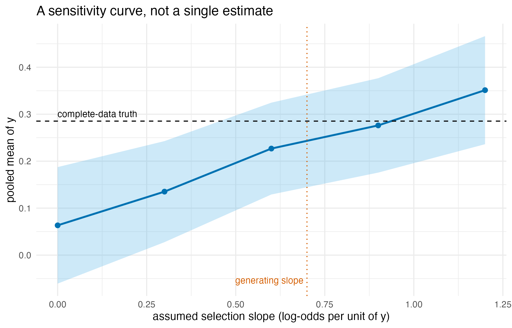
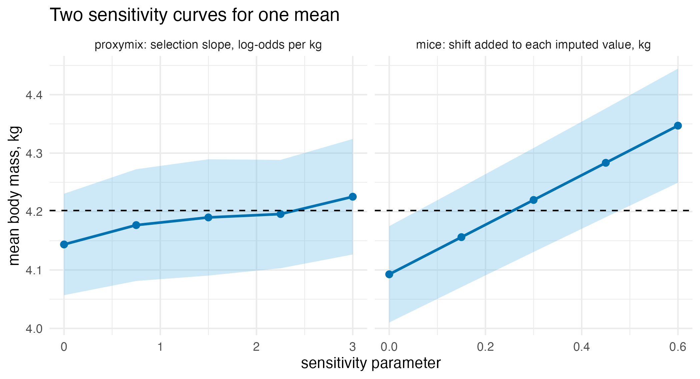

Missing data that depends on the missing value
Source:vignettes/articles/extended/missing_data_mnar.Rmd
missing_data_mnar.Rmd
has_ggplot2 <- requireNamespace("ggplot2", quietly = TRUE)
has_mice <- requireNamespace("mice", quietly = TRUE)The problem
An analyst has a column where the large values are the ones that went missing: an assay that saturates, a yield that was never recorded on the paddocks that did badly, a follow-up that the worst cases did not attend. The question is: the bigger values are exactly the ones I did not get, so the mean I am about to report is too small – by how much, and how do I put a defensible number on that when the data I would need to check is the data I do not have?
This vignette answers it on a synthetic toy where the deleted values are retained, so every estimate can be scored against the complete-data truth it was hiding.
Package capabilities
In proxymix you do not impute a missing entry so much as condition the fitted mixture on what its being missing tells you. For an entry missing at random that is nothing beyond the other coordinates, so the imputation law is the plain mixture conditional. Two common situations carry more information than that. An entry can be missing because it fell in a known interval – below a detection limit, above a ceiling – which is censoring. Or it can be missing with a probability that depends on its own unobserved value, larger values dropping out more often, which is missing not at random; modelling that probability directly is the selection-model formulation of Diggle and Kenward (1994). Each is a gate multiplying the mixture conditional before the value is drawn.
mar(), censored() and mnar()
build those three gates, and gmm_impute() takes one through
its mechanism argument. proxy_pool() combines
an estimand across the completions.
proxy_mnar_sensitivity() is the verb for the case where the
selection slope is assumed: it sweeps the slope and reports, at each
value, the pooled estimate with its interval and the observed-data
log-likelihood, so the reader sees the estimate across the whole range
of assumed slopes.
| Mechanism | Gate | Constructor | Identified |
|---|---|---|---|
| missing at random | constant | mar() | yes, given the model |
| censored | interval indicator | censored() | yes, bound known |
| missing not at random | selection probability | mnar() | only through the assumed shape |
Addressing the problem
A value-dependent mechanism biases the ordinary fit
The data are a synthetic two-component mixture in which the second
coordinate y goes missing with a probability that grows
with y itself, so the larger values are under-represented
among the observed. The complete data is generated first and kept, so
the truth is available to score against.
set.seed(20260622)
n <- 600L
comp <- sample(1:2, n, replace = TRUE)
mu <- rbind(c(0, 0), c(1.5, 0.5))
chol_r <- chol(matrix(c(1, 0.6, 0.6, 1), 2L))
z_full <- matrix(rnorm(2 * n), n, 2L) %*% chol_r + mu[comp, ]
colnames(z_full) <- c("x1", "y")
truth <- mean(z_full[, 2L])
beta_true <- 0.7
miss <- runif(n) < plogis(-0.5 + beta_true * z_full[, 2L])
dat <- z_full
dat[miss, "y"] <- NAAn imputer that assumes the data are missing at random fills the gap
from the conditional of the observed, which is itself short of the large
values, so it stays biased. Supplying the selection slope to
mnar() lets the fit account for the mechanism. Both fits
use m = 10 completions and allow 500 iterations, the limit
proxy_mnar_sensitivity() uses below.
m_draws <- 10L
mar_fit <- gmm_impute(dat, N = 2L, m = m_draws, mechanism = mar(),
seed = 1L, max_iter = 500L)
mnar_fit <- gmm_impute(dat, N = 2L, m = m_draws,
mechanism = mnar("y", beta = beta_true), seed = 1L,
max_iter = 500L)
mar_est <- proxy_pool(mar_fit, "y")$estimate
mnar_est <- proxy_pool(mnar_fit, "y")$estimate
#> Analytic pooling is not defined for a gated ("mnar") mechanism;
#> pooling by Rubin's rules instead.
#> ℹ The returned attribute `method` records what was used.Analytic pooling is defined for the plain conditional but not for a
gated one, so the gated fits fall back to Rubin’s rules (Rubin, 1987)
and say so; the returned method attribute records which was
used.
| Estimator of the mean of y | Estimate | Bias |
|---|---|---|
| complete-data truth | 0.285 | 0.000 |
| available cases only | -0.044 | -0.330 |
| missing at random | 0.058 | -0.227 |
| missing not at random | 0.240 | -0.046 |
The slope beta is the strength of the dependence on the
log-odds scale, and beta = 0 is the missing-at-random case.
The intercept is not supplied: it is calibrated to the observed fraction
missing.
Sweeping the selection slope
Under this selection model the observed data carry information about
the slope, but only through the assumed shape of the distribution of
y. A different shape can fit the observed data equally well
at another slope. A single estimate at one slope would therefore rest on
that shape, and the appropriate summary is a curve (Little, 1993).
proxy_mnar_sensitivity() sweeps the slope and reports at
each value the pooled mean with its interval, the observed-data
log-likelihood of the selection model, and whether the fit converged.
The analyst reads off where a conclusion would change. Five slope values
from 0 to 1.2 are enough to show the shape.
sweep <- proxy_mnar_sensitivity(dat, "y",
beta_grid = seq(0, 1.2, by = 0.3),
N = 2L, m = m_draws, seed = 1L)
covers <- sweep$conf.low <= truth & sweep$conf.high >= truth
beta_first <- sweep$beta[min(which(covers))]
beta_best <- sweep$beta[which.max(sweep$loglik)]
ll_gain <- max(sweep$loglik) - sweep$loglik[1L]| Assumed slope | Pooled mean | CI lower | CI upper | Log-likelihood | Converged |
|---|---|---|---|---|---|
| 0.0 | 0.063 | -0.061 | 0.187 | -1812.4 | yes |
| 0.3 | 0.135 | 0.028 | 0.243 | -1802.9 | yes |
| 0.6 | 0.227 | 0.129 | 0.325 | -1797.6 | yes |
| 0.9 | 0.276 | 0.176 | 0.377 | -1795.5 | yes |
| 1.2 | 0.351 | 0.236 | 0.466 | -1795.9 | yes |
The slope-0 row makes the same missing-at-random assumption as the
missing-at-random row of the previous table, but it is a separate
computation. proxy_mnar_sensitivity() refits the mixture
through the gated engine, draws the completions and pools them by
Rubin’s rules, while the earlier row pools the plain fit analytically,
without drawing. The two estimates, 0.063 and 0.058, differ by 0.005.
With m = 10 completions, the slope-0 estimate alone has a
Monte Carlo standard error of 0.014.
sweep_df <- as.data.frame(sweep)
ggplot2::ggplot(sweep_df, ggplot2::aes(beta, estimate)) +
ggplot2::geom_ribbon(
ggplot2::aes(ymin = conf.low, ymax = conf.high),
fill = "#56B4E9", alpha = 0.3
) +
ggplot2::geom_line(colour = "#0072B2", linewidth = 0.9) +
ggplot2::geom_point(colour = "#0072B2", size = 2) +
ggplot2::geom_hline(yintercept = truth, linetype = "dashed",
colour = "#000000") +
ggplot2::geom_vline(xintercept = beta_true, linetype = "dotted",
colour = "#D55E00") +
ggplot2::annotate("text", x = min(sweep_df$beta), y = truth,
label = "complete-data truth", hjust = 0, vjust = -0.6,
size = 3.2) +
ggplot2::annotate("text", x = beta_true, y = min(sweep_df$conf.low),
label = "generating slope", hjust = 1.05, vjust = 0,
size = 3.2, colour = "#D55E00") +
ggplot2::labs(
x = "assumed selection slope (log-odds per unit of y)",
y = "pooled mean of y",
title = "A sensitivity curve, not a single estimate"
) +
ggplot2::theme_minimal(base_size = 11)
The pooled mean of y rises with the assumed selection slope, and its interval reaches the complete-data truth near the slope that actually generated the data. The observed data inform the slope only through the assumed shape of y, so the result is the whole curve.
Censoring is the exact, identifiable case
When the reason for missingness is a known bound, the mechanism is
identified and there is no sensitivity parameter. A detection limit that
hides values of y below a threshold is
censored("y", upper = threshold), and proxymix draws from
the mixture conditional truncated to the censored interval rather than
substituting a constant such as half the limit.
thr <- 0.3
cmiss <- z_full[, 2L] < thr
cdat <- z_full
cdat[cmiss, "y"] <- NA
cfit <- gmm_impute(cdat, N = 2L, m = m_draws,
mechanism = censored("y", upper = thr), seed = 1L)
cens_est <- proxy_pool(cfit, "y")$estimate
#> Analytic pooling is not defined for a gated ("censored") mechanism;
#> pooling by Rubin's rules instead.
#> ℹ The returned attribute `method` records what was used.| Estimator of the mean of y | Estimate | Bias |
|---|---|---|
| complete-data truth | 0.285 | 0.000 |
| available cases only | 1.102 | 0.817 |
| half the detection limit | 0.631 | 0.345 |
| proxymix, truncated draw | 0.318 | 0.032 |
Interpretation
250 of the 600 values of y went missing, and because the
larger ones dropped out preferentially the available cases give -0.044
against a complete-data truth of 0.285, understating it by 0.33.
Assuming missingness at random recovers only part of that: the pooled
mean is 0.058, still 0.227 low, because the conditional it imputes from
is itself built on the shortened observed values. Supplying the
generating slope to mnar() brings the pooled mean to 0.24,
within 0.046 of the truth. That is the answer to the first half of the
opening question: the bias is real, it is about 0.3 on this scale, and
assuming it away does not remove it.
The second half is the sensitivity curve. The pooled mean rises
monotonically across the swept slopes, from 0.063 at slope 0 to 0.351 at
slope 1.2, and its interval first reaches the complete-data truth at an
assumed slope of 0.6, against the 0.7 that generated the data. The
mixture fit converged at every slope. The log-likelihood is highest at
slope 0.9, 17.0 units above its value at slope 0, so under this model
the observed data lean towards the larger slopes. That lean comes from
the assumed two-component shape of y, not from anything the
data show about why values went missing. What belongs in a report is the
curve itself, with the reader’s own view of a plausible slope applied to
it.
Censoring is the case where no sweep is needed. With 297 values
hidden below a limit of 0.3, the available cases give 1.102, overstating
the truth by 0.817. The common substitution of half the detection limit
gives 0.631, still 0.345 high. Half the limit is a convention for
concentrations, which cannot fall below zero; here y is
unbounded below, and 90 per cent of the hidden values lie below 0.15, so
the substitute sits above most of them. Drawing from the mixture
conditional truncated to the censored interval gives 0.318, within 0.032
of the truth, because the bound is known and so the gate is exact rather
than assumed.
Limitations
The interval and value-dependent gates act on a single coordinate,
and a row missing that coordinate is assumed to have its other
coordinates observed, which is the detection-limit or single-outcome
setting rather than a general pattern of holes across many columns. A
model estimand other than a coordinate mean is pooled by handing the
completions to mice through as_mids(), and
inherits Rubin’s large-sample assumptions.
The sensitivity sweep prices one departure at a time: the selection
probability is a logistic function of the missing coordinate alone, with
the intercept calibrated to the observed missing fraction, so a
mechanism that depends jointly on the missing value and an unobserved
third variable is outside what the sweep brackets. The sweep is also not
a test. Its log-likelihood favours some slopes only because of the
assumed shape of y, so it cannot tell an analyst which
slope is right. The sweep shows how the estimate moves with the assumed
slope, and the range is only as wide as the grid the analyst chose.
The numbers here come from one synthetic realisation at
n = 600 with m = 10 completions, and would
move under a different seed. What would change the answer most is the
component count and the assumed slope: a mixture with too few components
cannot represent the two clusters that make the conditional informative,
and a slope far from the truth moves the pooled mean roughly linearly,
which is what the sensitivity table shows. The numerical illustration
that follows places both gates beside the established tools for each
case, the Tobit regression for censoring and delta-adjusted multiple
imputation for the sensitivity sweep, on real data and in
simulation.
Numerical illustration
A censored outcome: the Affairs data with three estimators
The censored case has an established estimator, the Tobit regression
of Tobin (1958), which treats an outcome recorded as zero as a latent
value at or below zero and maximises the likelihood of a linear-Gaussian
model for the latent value. tobit() in AER (Kleiber and
Zeileis, 2008) and survreg() in survival (Therneau and
Grambsch, 2000) both fit it, the first by calling the second. The
proxymix route reaches the same model from the other side: the zeros are
set to missing, censored() says they lie at or below zero,
and the fitted mixture conditional, truncated to that interval, supplies
completed values that an ordinary regression is then run on and
pooled.
The competitors install from CRAN once and load as usual:
install.packages(c("mice", "Amelia", "AER", "survival", "sampleSelection"))The data are the Affairs survey of Fair (1978), shipped
with AER and the package’s own Tobit example. The number of affairs in
the past year is regressed on age, years married, religiousness,
occupation and a self-rating of the marriage:
data("Affairs", package = "AER")
cols_aff <- c("affairs", "age", "yearsmarried", "religiousness",
"occupation", "rating")
aff <- Affairs[, cols_aff]
f_aff <- affairs ~ age + yearsmarried + religiousness + occupation + ratingOf the 601 respondents, 451 reported no affairs, which the Tobit model reads as a latent value at or below zero.
fit_tobit <- tobit(f_aff, data = aff)
fit_survreg <- survreg(
Surv(affairs, affairs > 0, type = "left") ~ age + yearsmarried +
religiousness + occupation + rating,
data = aff, dist = "gaussian"
)
aff_holes <- aff
aff_holes$affairs[aff$affairs == 0] <- NA
imp_aff <- gmm_impute(aff_holes, N = 1L, m = 20L,
mechanism = censored("affairs", upper = 0), seed = 1L)
imp_aff_bic <- gmm_impute(aff_holes, m = 20L,
mechanism = censored("affairs", upper = 0),
seed = 1L)
pool_aff <- function(imp) {
fits <- lapply(complete(as_mids(imp), "all"),
function(d) lm(f_aff, data = d))
summary(pool(fits))
}
pooled_aff <- pool_aff(imp_aff)
pooled_aff_bic <- pool_aff(imp_aff_bic)| Coefficient | AER tobit | survival survreg | proxymix, N = 1 | proxymix, N = 6 |
|---|---|---|---|---|
| intercept | 8.174 (2.741) | 8.174 (2.741) | 8.522 (2.920) | 8.927 (3.626) |
| age | -0.179 (0.079) | -0.179 (0.079) | -0.182 (0.082) | -0.187 (0.088) |
| years married | 0.554 (0.135) | 0.554 (0.135) | 0.554 (0.142) | 0.349 (0.183) |
| religiousness | -1.686 (0.404) | -1.686 (0.404) | -1.687 (0.391) | -1.208 (0.425) |
| occupation | 0.326 (0.254) | 0.326 (0.254) | 0.252 (0.264) | 0.285 (0.273) |
| rating | -2.285 (0.408) | -2.285 (0.408) | -2.277 (0.398) | -1.889 (0.481) |
The two Tobit fits are the same fit, as the identical columns show. With a single component, proxymix’s model of the latent value given the covariates is the same linear-Gaussian model, estimated by expectation-maximisation over the truncated conditional rather than by direct maximisation, and its pooled coefficients fall within 0.3 Tobit standard errors of the Tobit estimates. Left to choose its component count, proxymix selects 6 components for the joint distribution of the six columns, all of them coarsely coded and three of them integer scores, and that fit had not converged after 100 iterations, the default limit. The regression on its completions is then the linear projection of a conditional that is no longer linear. Against the Tobit estimates, the coefficients on years married, religiousness, occupation and rating move towards zero, the largest in Tobit standard errors being on years married, from 0.554 to 0.349, or 1.53 standard errors. On this data the Tobit model is the natural reading, and the single component is the like-for-like comparison; the simulation below scores it against the truth.
Value-dependent deletion: the Palmer penguins data
Established estimators for the missing-not-at-random case exist under a parametric selection model, such as the two-step estimator of Heckman (1979). Their answer rests on the assumed shape of the outcome distribution, so the standard practice is a sensitivity analysis, and the standard tool is delta adjustment in multiple imputation (van Buuren, 2018, Section 9.2), available in mice (van Buuren and Groothuis-Oudshoorn, 2011). Delta adjustment keeps the imputation model fixed and shifts its draws: impute under the missing-at-random assumption, add a shift to every imputed value, and repeat over a grid of shifts. The proxymix sweep is a different kind of sweep. At each slope of the log-odds of being missing in the missing value, it refits the mixture under the selection model and imputes from that fit. Two further estimators are run for reference. Amelia (Honaker et al., 2011) imputes under missing at random and shows what ignoring the mechanism costs. The Heckman two-step estimator, from sampleSelection (Toomet and Henningsen, 2008), fits a probit selection equation and corrects the outcome regression with its inverse Mills ratio.
The data are the Palmer penguins (Gorman et al., 2014), shipped with
R as penguins since version 4.5.0 (Horst et al., 2022),
with body mass in kilograms. Body mass is deleted with a probability
that rises with body mass itself, at a log-odds slope of 1.5 per
kilogram, and the deleted values stay aside for scoring.
cols <- c("bill_len", "bill_dep", "flipper_len", "body_mass")
peng <- na.omit(penguins[, cols])
peng$body_mass <- peng$body_mass / 1000
set.seed(20260925)
gone <- runif(nrow(peng)) < plogis(1.5 * (peng$body_mass - 4.5))
peng_holes <- peng
peng_holes$body_mass[gone] <- NA
mass_truth <- mean(peng$body_mass)That leaves 342 birds, of which 145 lose their body mass. The mean of the retained masses is 3.871 kg against 4.202 kg over all the birds.
The proxymix sweep covers five slopes from 0 to 3 per kilogram, which bracket the generating slope, at 20 completions each. The mice sweep covers five shifts from 0 to 0.6 kg, three quarters of a standard deviation of body mass, with imputation by the normal linear model so that the shift acts on a model-based draw:
beta_peng <- seq(0, 3, by = 0.75)
delta_peng <- seq(0, 0.6, by = 0.15)
sweep_peng <- proxy_mnar_sensitivity(peng_holes, "body_mass",
beta_grid = beta_peng, m = 20L,
seed = 1L)
pool_mean <- function(fits) {
s <- summary(pool(fits), conf.int = TRUE)
unlist(s[1L, c("estimate", "conf.low", "conf.high")])
}
mice_delta <- function(delta) {
post <- make.post(peng_holes)
post["body_mass"] <- paste0("imp[[j]][, i] <- imp[[j]][, i] + ", delta)
imp <- mice(peng_holes, m = 20L, method = "norm", post = post, seed = 1L,
printFlag = FALSE)
pool_mean(with(imp, lm(body_mass ~ 1))$analyses)
}
sweep_mice <- t(vapply(delta_peng, mice_delta, numeric(3L)))
set.seed(1L)
imp_amelia <- amelia(peng_holes, m = 20L, p2s = 0L)
mean_amelia <- pool_mean(lapply(imp_amelia$imputations,
function(d) lm(body_mass ~ 1, data = d)))
peng_sel <- peng_holes
peng_sel$seen <- !is.na(peng_sel$body_mass)
fit_heckit <- heckit(seen ~ bill_len + bill_dep + flipper_len,
body_mass ~ bill_len + bill_dep + flipper_len,
data = peng_sel)
# the mean of the outcome equation over every bird, delta-method interval
heckit_mean <- function(fit, data, outcome_cols) {
x_bar <- c(1, colMeans(data[, outcome_cols]))
b <- coef(fit)[seq_along(x_bar) + length(x_bar)]
v <- vcov(fit)[seq_along(x_bar) + length(x_bar),
seq_along(x_bar) + length(x_bar)]
est <- sum(x_bar * b)
se <- sqrt(as.numeric(t(x_bar) %*% v %*% x_bar))
c(estimate = est, conf.low = est - qnorm(0.975) * se,
conf.high = est + qnorm(0.975) * se)
}
mean_heckit <- heckit_mean(fit_heckit, peng_sel, cols[1:3])Deleting the heavier birds pulls the mean of the available cases down by 0.331 kg. The proxymix curve at slope 0 and Amelia both impute under missing at random, and both recover most of that from the three observed measurements, which carry the species structure: their errors are -0.058 and -0.097 kg. At the generating slope of 1.5 the proxymix estimate is -0.012 kg from the truth. The mice curve starts lower, at -0.109 kg, and crosses the truth between shifts of 0.15 and 0.3 kg. Both curves reach the truth. Every mice shift uses the same imputation model, so the observed data fit equally well at every shift. The proxymix fit converged at every slope, and its log-likelihood is highest at slope 1.5. That lean comes from the assumed mixture shape of the four measurements, not from the deletion mechanism. The Heckman estimator’s selection equation has no variable that predicts deletion but not body mass, so it is identified by the shape of the inverse Mills ratio alone. Here that fit breaks down. Its mean is 1.78 kg, with an interval from 1.48 to 2.09 kg, while the lightest bird weighs 2.70 kg. Its estimated correlation between the selection and outcome errors is 1.38, outside , and its coefficient on flipper length is -0.042 kg per millimetre against 0.050 in the complete data. This is one deletion of one dataset, so the simulation repeats it.
| Method | Value | Mean body mass, kg | Error | Log-likelihood |
|---|---|---|---|---|
| complete data | – | 4.202 (4.116, 4.287) | 0.000 | – |
| available cases | – | 3.871 (3.781, 3.961) | -0.331 | – |
| proxymix, slope | 0.00 | 4.144 (4.057, 4.230) | -0.058 | -2979.0 |
| proxymix, slope | 0.75 | 4.177 (4.081, 4.272) | -0.025 | -2950.6 |
| proxymix, slope | 1.50 | 4.190 (4.090, 4.289) | -0.012 | -2943.9 |
| proxymix, slope | 2.25 | 4.196 (4.103, 4.288) | -0.006 | -2950.8 |
| proxymix, slope | 3.00 | 4.225 (4.127, 4.324) | 0.024 | -2964.5 |
| mice, shift, kg | 0.00 | 4.093 (4.010, 4.175) | -0.109 | – |
| mice, shift, kg | 0.15 | 4.156 (4.071, 4.242) | -0.046 | – |
| mice, shift, kg | 0.30 | 4.220 (4.131, 4.309) | 0.018 | – |
| mice, shift, kg | 0.45 | 4.283 (4.190, 4.376) | 0.082 | – |
| mice, shift, kg | 0.60 | 4.347 (4.249, 4.445) | 0.145 | – |
| Amelia | – | 4.104 (4.014, 4.195) | -0.097 | – |
| heckit | – | 1.784 (1.479, 2.088) | -2.418 | – |

The two sensitivity curves for the mean body mass of the penguins, proxymix over the assumed selection slope and mice over the shift added to each imputed value, with 95% bands and the complete-data mean as a dashed line. Each curve crosses the truth somewhere along its grid. The observed data inform the proxymix slope only through the assumed mixture shape, and do not inform the mice shift.
A simulation benchmark
The simulation repeats each analysis on 300 datasets of 300 rows in two designs whose population values are known. The missing-not-at-random design is the toy above at half its size: two equally likely components centred at and with unit variances and correlation 0.6, and deleted with probability , which removes 43 per cent of on average. The estimand is the mean of , whose population value is 0.25. The proxymix sweep covers the slopes 0, 0.35, 0.7, 1.05, so that the generating slope is on the grid, and the mice sweep covers the shifts 0, 0.2, 0.4, 0.6 in units of , about a fifth of its standard deviation per step. Amelia, the Heckman two-step estimator with in both equations, and the available cases are scored beside them. In the censored design, is standard normal and with standard normal and set so that 30 per cent of falls below zero; the recorded is . The estimands are the intercept and slope of the latent regression, scored for the Tobit likelihood in AER and survival, for proxymix’s truncated imputations with the component count selected by BIC, and for the regression that takes the recorded zeros at face value.
Each imputer makes 10 completions, and every interval is a 95 per
cent interval: Rubin’s rules for the imputers, Wald for the Tobit fits
and the Heckman mean, and the usual regression or
interval otherwise. The analysis of the complete data, before deletion
or censoring, is the reference. proxy_mnar_sensitivity()
warns when a fit does not converge, and the stored run raised 0
warnings, so every sweep fit converged within its 500 iterations. This
chunk is complete and runs as shown, but it took about 15 minutes on one
core (R 4.6.1, Apple silicon), so it is not run when the vignette builds
and the tables below it are read from its stored output. For a quick
reduced run, change the line n_rep <- 300L to a small
number such as n_rep <- 3L.
library(proxymix)
library(mice)
library(Amelia)
library(AER)
library(survival)
library(sampleSelection)
n <- 300L # rows in each dataset
m <- 10L # completions per imputer
n_rep <- 300L # datasets per design
beta_grid <- c(0, 0.35, 0.7, 1.05) # proxymix selection slopes
delta_grid <- c(0, 0.2, 0.4, 0.6) # mice shifts, in units of y
a_cens <- -sqrt(2) * qnorm(0.3) # 30% of the latent values fall below 0
truth <- c(mnar_mean = 0.25, cens_intercept = a_cens, cens_slope = 1)
# estimate and 95% interval for every coefficient: the usual interval for
# one dataset, Rubin's rules over several completions
ci_fits <- function(fits) {
if (length(fits) == 1L) {
return(cbind(coef(fits[[1L]]), confint(fits[[1L]])))
}
s <- summary(pool(fits), conf.int = TRUE)
as.matrix(s[, c("estimate", "conf.low", "conf.high")])
}
# Wald interval for the regression coefficients of a Tobit fit
ci_wald <- function(fit, k) {
est <- coef(fit)[seq_len(k)]
se <- sqrt(diag(vcov(fit)))[seq_len(k)]
cbind(est, est - qnorm(0.975) * se, est + qnorm(0.975) * se)
}
# the mean of a Heckman outcome equation over every row, delta method
ci_heckit_mean <- function(fit, x_bar) {
idx <- seq_along(x_bar) + length(x_bar)
est <- sum(x_bar * coef(fit)[idx])
v <- as.numeric(t(x_bar) %*% vcov(fit)[idx, idx] %*% x_bar)
se <- if (is.finite(v) && v >= 0) sqrt(v) else NA_real_
cbind(est, est - qnorm(0.975) * se, est + qnorm(0.975) * se)
}
rows_of <- function(design, estimand, method, ci) {
data.frame(design = design, estimand = estimand, method = method,
estimate = ci[, 1L], lower = ci[, 2L], upper = ci[, 3L])
}
mu <- rbind(c(0, 0), c(1.5, 0.5))
chol_r <- chol(matrix(c(1, 0.6, 0.6, 1), 2L))
one_mnar <- function(r) {
set.seed(r)
comp <- sample(1:2, n, replace = TRUE)
z <- matrix(rnorm(2 * n), n, 2L) %*% chol_r + mu[comp, ]
full <- data.frame(x1 = z[, 1L], y = z[, 2L])
obs <- full
obs$y[runif(n) < plogis(-0.5 + 0.7 * full$y)] <- NA
seen <- !is.na(obs$y)
out <- list(
rows_of("mnar", "mean", "complete data",
ci_fits(list(lm(y ~ 1, data = full)))),
rows_of("mnar", "mean", "available cases",
ci_fits(list(lm(y ~ 1, data = obs[seen, ]))))
)
sw <- proxy_mnar_sensitivity(obs, "y", beta_grid = beta_grid, m = m,
seed = r)
out[[3L]] <- rows_of("mnar", "mean", paste0("proxymix, slope ", sw$beta),
as.matrix(sw[, c("estimate", "conf.low", "conf.high")]))
out[[4L]] <- do.call(rbind, lapply(delta_grid, function(delta) {
post <- make.post(obs)
post["y"] <- paste0("imp[[j]][, i] <- imp[[j]][, i] + ", delta)
imp <- mice(obs, m = m, method = "norm", post = post, seed = r,
printFlag = FALSE)
rows_of("mnar", "mean", paste0("mice, shift ", delta),
ci_fits(with(imp, lm(y ~ 1))$analyses))
}))
out[[5L]] <- rows_of("mnar", "mean", "Amelia",
ci_fits(lapply(amelia(obs, m = m, p2s = 0L)$imputations,
function(d) lm(y ~ 1, data = d))))
obs$seen <- seen
fit <- heckit(seen ~ x1, y ~ x1, data = obs)
out[[6L]] <- rows_of("mnar", "mean", "sampleSelection heckit",
ci_heckit_mean(fit, c(1, mean(obs$x1))))
do.call(rbind, out)
}
one_censored <- function(r) {
set.seed(r)
x <- rnorm(n)
y_star <- a_cens + x + rnorm(n)
full <- data.frame(x = x, y = y_star)
obs <- data.frame(x = x, y = pmax(y_star, 0))
holes <- obs
holes$y[obs$y == 0] <- NA
imp <- gmm_impute(holes, m = m, mechanism = censored("y", upper = 0),
seed = r)
cis <- list(
"complete data" = ci_fits(list(lm(y ~ x, data = full))),
"zeros at face value" = ci_fits(list(lm(y ~ x, data = obs))),
"AER tobit" = ci_wald(tobit(y ~ x, data = obs), 2L),
"survival survreg" = ci_wald(
survreg(Surv(y, y > 0, type = "left") ~ x, data = obs,
dist = "gaussian"), 2L),
proxymix = ci_fits(lapply(complete(as_mids(imp), "all"),
function(d) lm(y ~ x, data = d)))
)
do.call(rbind, lapply(names(cis), function(method) {
rows_of("censored", c("intercept", "slope"), method, cis[[method]])
}))
}
res <- rbind(
do.call(rbind, lapply(seq_len(n_rep), one_mnar)),
do.call(rbind, lapply(seq_len(n_rep), one_censored))
)
res$truth <- truth[ifelse(res$design == "mnar", "mnar_mean",
paste0("cens_", res$estimand))]
n_undefined <- sum(is.na(res$lower))
sim_tab <- aggregate(
cbind(bias = estimate - truth, rmse = (estimate - truth)^2,
coverage = lower <= truth & truth <= upper,
width = upper - lower) ~ design + estimand + method,
data = res, FUN = function(v) mean(v, na.rm = TRUE),
na.action = na.pass
)
sim_tab$rmse <- sqrt(sim_tab$rmse)
sim_tab| Method | Bias | RMSE | Coverage | Width |
|---|---|---|---|---|
| complete data | 0.003 | 0.059 | 0.947 | 0.234 |
| available cases | -0.284 | 0.294 | 0.047 | 0.295 |
| proxymix, slope 0 | -0.185 | 0.198 | 0.230 | 0.282 |
| proxymix, slope 0.35 | -0.090 | 0.116 | 0.783 | 0.289 |
| proxymix, slope 0.7 | -0.002 | 0.077 | 0.947 | 0.305 |
| proxymix, slope 1.05 | 0.080 | 0.113 | 0.873 | 0.320 |
| mice, shift 0 | -0.185 | 0.198 | 0.247 | 0.290 |
| mice, shift 0.2 | -0.099 | 0.122 | 0.777 | 0.292 |
| mice, shift 0.4 | -0.014 | 0.074 | 0.950 | 0.297 |
| mice, shift 0.6 | 0.072 | 0.103 | 0.870 | 0.303 |
| Amelia | -0.187 | 0.200 | 0.250 | 0.284 |
| sampleSelection heckit | 0.341 | 116.203 | 0.986 | 2382.095 |
| Estimand | Method | Bias | RMSE | Coverage | Width |
|---|---|---|---|---|---|
| intercept | complete data | 0.002 | 0.058 | 0.933 | 0.228 |
| intercept | zeros at face value | 0.270 | 0.273 | 0.000 | 0.182 |
| intercept | AER tobit | 0.002 | 0.063 | 0.940 | 0.252 |
| intercept | survival survreg | 0.002 | 0.063 | 0.940 | 0.252 |
| intercept | proxymix | 0.024 | 0.075 | 0.907 | 0.283 |
| slope | complete data | -0.005 | 0.062 | 0.933 | 0.229 |
| slope | zeros at face value | -0.302 | 0.306 | 0.000 | 0.183 |
| slope | AER tobit | -0.004 | 0.073 | 0.937 | 0.269 |
| slope | survival survreg | -0.004 | 0.073 | 0.937 | 0.269 |
| slope | proxymix | -0.033 | 0.085 | 0.907 | 0.317 |
Under value-dependent deletion, every estimator that assumes missing at random shares one bias. The available cases understate the mean by 0.284, and proxymix at slope 0, mice at shift 0 and Amelia by 0.185, 0.185 and 0.187, with coverage of 0.23 to 0.25, because carries only part of what the deletion depends on. Along each grid the bias falls through zero. At the generating slope of 0.7, proxymix has a bias of -0.002 and covers the population mean in 0.947 of datasets, against 0.947 for the complete data. At a shift of 0.4, mice has a bias of -0.014 and coverage of 0.950. Both curves reach the truth somewhere on their grids. What differs is the parameter the analyst must have a view about: a slope on the log-odds scale, which the observed data inform only through the assumed mixture shape, or a shift in the units of , which they do not inform. The Heckman two-step estimator, with in both equations and no exclusion restriction, has a root mean squared error of 116 and an average interval width of 2382, and in 13 datasets its interval was undefined because the delta-method variance was not positive; its coverage is over the remaining datasets. A coverage near 0.95 estimated from 300 datasets carries a Monte Carlo standard error of about 0.013, so differences of a hundredth or two can be noise.
In the censored design, the two Tobit fits are again one fit, with slope bias -0.004 and coverage 0.937, against -0.005 and 0.933 for the complete data. Taking the zeros at face value biases the slope by -0.302 and never covers it. The truncated imputations of proxymix remove almost all of that bias, to -0.033 on the slope and 0.024 on the intercept, but not all of it, and its intervals cover in 0.907 of datasets although they are wider than the Tobit intervals, 0.317 against 0.269. The Tobit likelihood is the correctly specified maximum-likelihood estimator for this design, and the imputation route, with its component count chosen by BIC and its parameters refitted on bootstrap resamples, pays a small price in both bias and coverage for reaching the same model from the imputation side.
In this run, proxymix’s sweep and mice’s delta adjustment did about equally well in the value-dependent design, each at the grid value nearest the truth: a bias of -0.002 and coverage of 0.947 for proxymix at slope 0.7, against -0.014 and 0.950 for mice at a shift of 0.4. The Tobit likelihood in AER and survival did better than proxymix’s imputations in the censored design, with a slope root mean squared error of 0.073 against 0.085 and coverage of 0.937 against 0.907. The comparison covers one mixture shape, one sample size, a logistic mechanism on one coordinate, censoring at a single known bound, and grids that both contain a value near the truth; it says nothing about a mechanism that depends on an unobserved third variable, about interval censoring, or about how either sweep behaves when the grid does not reach the truth.
Further reading
Imputing missing data with a mixture is the companion case this vignette assumes away, where missingness depends only on what was observed, and it shows how the mixture conditional differs from a single Gaussian in the shape of the imputations.
The closed-form operator calculus on a mixture covers the conditioning step that every gate multiplies into, and what else it buys.
References
- Diggle, P. and Kenward, M. G. (1994). Informative drop-out in longitudinal data analysis. Journal of the Royal Statistical Society C 43(1), 49–93. doi:10.2307/2986113.
- Fair, R. C. (1978). A theory of extramarital affairs. Journal of Political Economy 86(1), 45–61. doi:10.1086/260646.
- Gorman, K. B., Williams, T. D. and Fraser, W. R. (2014). Ecological sexual dimorphism and environmental variability within a community of Antarctic penguins (genus Pygoscelis). PLoS ONE 9(3), e90081. doi:10.1371/journal.pone.0090081.
- Heckman, J. J. (1979). Sample selection bias as a specification error. Econometrica 47(1), 153–161. doi:10.2307/1912352.
- Honaker, J., King, G. and Blackwell, M. (2011). Amelia II: A program for missing data. Journal of Statistical Software 45(7), 1–47. doi:10.18637/jss.v045.i07.
- Horst, A. M., Presmanes Hill, A. and Gorman, K. B. (2022). Palmer Archipelago penguins data in the palmerpenguins R package – an alternative to Anderson’s irises. The R Journal 14(1), 244–254. doi:10.32614/RJ-2022-020.
- Kleiber, C. and Zeileis, A. (2008). Applied Econometrics with R. Springer. doi:10.1007/978-0-387-77318-6.
- Little, R. J. A. (1993). Pattern-mixture models for multivariate incomplete data. Journal of the American Statistical Association 88(421), 125–134. doi:10.1080/01621459.1993.10594302.
- Rubin, D. B. (1987). Multiple Imputation for Nonresponse in Surveys. Wiley.
- Therneau, T. M. and Grambsch, P. M. (2000). Modeling Survival Data: Extending the Cox Model. Springer. doi:10.1007/978-1-4757-3294-8.
- Tobin, J. (1958). Estimation of relationships for limited dependent variables. Econometrica 26(1), 24–36. doi:10.2307/1907382.
- Toomet, O. and Henningsen, A. (2008). Sample selection models in R: Package sampleSelection. Journal of Statistical Software 27(7), 1–23. doi:10.18637/jss.v027.i07.
- van Buuren, S. (2018). Flexible Imputation of Missing Data, second edition. Chapman and Hall/CRC. doi:10.1201/9780429492259.
- van Buuren, S. and Groothuis-Oudshoorn, K. (2011). mice: Multivariate imputation by chained equations in R. Journal of Statistical Software 45(3), 1–67. doi:10.18637/jss.v045.i03.
Reproduce
The data-generating seed is 20260622, set in the chunk
that builds the toy; every call to gmm_impute() and
proxy_mnar_sensitivity() is given seed = 1L,
which makes the completions reproducible without disturbing the ambient
random-number state.
The numerical illustration deletes body mass after
set.seed(20260925) and gives each imputer the seed 1,
through set.seed(1L) for Amelia; the Affairs fits draw
nothing beyond proxymix’s seeded completions. In the simulation each
dataset is generated after set.seed() with its own index,
which is also the seed given to each imputer. The stored simulation
results come from the code shown, run on 26 September 2026 with R 4.6.1,
proxymix 0.16.0, mice 3.19.0, Amelia 1.8.3, AER 1.2-17, survival 3.8-11
and sampleSelection 1.2-14, and the run raised 0 warnings.
sessionInfo()
#> R version 4.6.1 (2026-06-24)
#> Platform: aarch64-apple-darwin23
#> Running under: macOS Tahoe 26.6.2
#>
#> Matrix products: default
#> BLAS: /Library/Frameworks/R.framework/Versions/4.6/Resources/lib/libRblas.0.dylib
#> LAPACK: /Library/Frameworks/R.framework/Versions/4.6/Resources/lib/libRlapack.dylib; LAPACK version 3.12.1
#>
#> locale:
#> [1] en_AU.UTF-8/en_AU.UTF-8/en_AU.UTF-8/C/en_AU.UTF-8/en_AU.UTF-8
#>
#> time zone: Australia/Adelaide
#> tzcode source: internal
#>
#> attached base packages:
#> [1] stats graphics grDevices utils datasets methods base
#>
#> other attached packages:
#> [1] sampleSelection_1.2-14 maxLik_1.5-2.2 miscTools_0.6-30
#> [4] AER_1.2-17 survival_3.8-11 sandwich_3.1-3
#> [7] lmtest_0.9-40 zoo_1.9-0 car_3.1-5
#> [10] carData_3.0-6 Amelia_1.8.3 Rcpp_1.1.2
#> [13] mice_3.19.0 proxymix_0.16.0
#>
#> loaded via a namespace (and not attached):
#> [1] gtable_0.3.6 shape_1.4.6.1 xfun_0.60 bslib_0.12.0
#> [5] ggplot2_4.0.3 htmlwidgets_1.6.4 lattice_0.23-1 vctrs_0.7.3
#> [9] tools_4.6.1 Rdpack_2.6.6 generics_0.1.4 stats4_4.6.1
#> [13] tibble_3.3.1 pan_2.0 pkgconfig_2.0.3 jomo_2.7-6
#> [17] Matrix_1.7-6 RColorBrewer_1.1-3 S7_0.2.2 desc_1.4.3
#> [21] lifecycle_1.0.5 compiler_4.6.1 farver_2.1.2 textshaping_1.0.5
#> [25] codetools_0.2-20 systemfit_1.1-30 htmltools_0.5.9 sass_0.4.10
#> [29] yaml_2.3.12 glmnet_5.0 Formula_1.2-6 pillar_1.11.1
#> [33] pkgdown_2.2.1 nloptr_2.2.1 jquerylib_0.1.4 tidyr_1.3.2
#> [37] MASS_7.3-66 cachem_1.1.0 reformulas_0.4.4 iterators_1.0.14
#> [41] abind_1.4-8 rpart_4.1.27 boot_1.3-32 foreach_1.5.2
#> [45] mitml_0.4-5 nlme_3.1-171 tidyselect_1.2.1 digest_0.6.39
#> [49] mvtnorm_1.4-2 dplyr_1.2.1 purrr_1.2.2 labeling_0.4.3
#> [53] splines_4.6.1 fastmap_1.2.0 grid_4.6.1 cli_3.6.6
#> [57] magrittr_2.0.5 dichromat_2.0-1 broom_1.0.13 foreign_0.8-91
#> [61] withr_3.0.3 scales_1.4.0 backports_1.5.1 rmarkdown_2.32
#> [65] otel_0.2.0 nnet_7.3-21 lme4_2.0-6 ragg_1.5.2
#> [69] VGAM_1.1-14 evaluate_1.0.5 knitr_1.51 rbibutils_2.4.1
#> [73] rlang_1.3.0 glue_1.8.1 minqa_1.2.8 jsonlite_2.0.0
#> [77] R6_2.6.1 systemfonts_1.3.2 fs_2.1.0